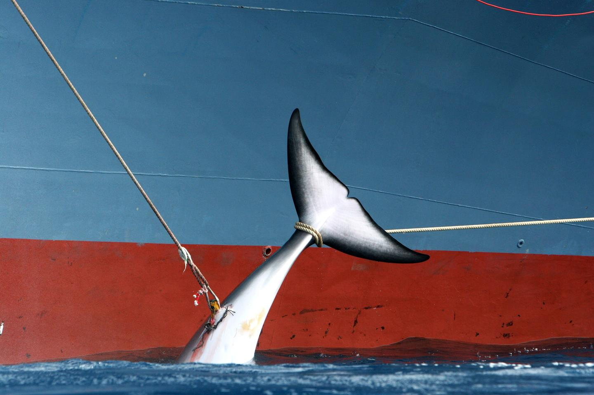
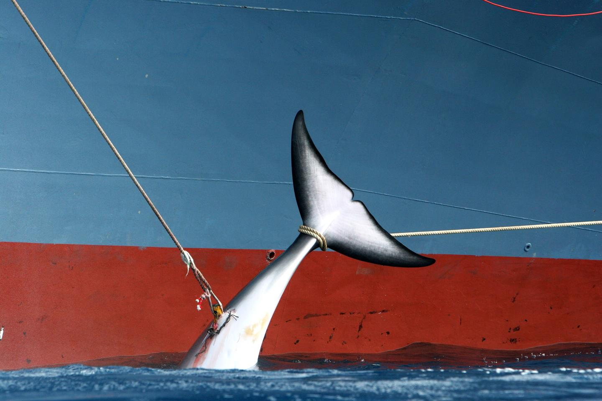

过度捕捞
人类很早就开始捕鱼，在海边居住的人以此为生。但是凡事都讲求适度，捕鱼也不可竭泽而渔。概念
过度捕捞是指对资源种群的捕捞死亡率超过其自然生长率，从而降低种群产生最大持续产量长期能力的行为或现象。（通俗的说就是捕的比生的多，导致越捕越少了）
此外，过度捕捞还指沿食物网向下捕捞的现象。个体大、经济价值高、位于食物网上层的肉食性鱼类是渔业优先捕捞的对象，当它们因过度捕捞而资源衰退或衰竭时，捕捞对象逐渐转向个体较小、营养级较低的物种。（大鱼捕完捕小鱼）
过度捕捞的影响
海洋鱼类的捕获量下降。高强度捕捞的结果造成大多数高等级鱼类数量急剧下降。
渔业对象转向营养级较低、个体较小的种类。
对海洋珍惜动物和群落优势种、关键种的损害。例如，南极的商业性捕鲸使鲸的数量急剧下降。
遭受过渡捕捞的物种
- 鲸类
- 海洋哺乳动物（海豹、海狮、海象、海獭、海牛等）
- 鲨鱼（鲨鱼翅是上等食品）
- 海鸟（日本短尾信天翁、美国东海岸的燕鸥等）
- 某些企鹅
- 海龟（药用价值高）
- 海洋无脊椎动物（珊瑚礁等）
世界上最大的生物——鲸
介绍
鲸是哺乳动物，不是鱼类。海豚也是鲸的一种。鲸的尺寸可以由只有1.2米长的毛伊海豚，到长34米重达190吨的蓝鲸，后者也是地球上最大的生物。作为大型海洋哺乳动物，鲸的繁殖能力较差，繁殖周期较长，一次生育的后代也较少。
鲸有以下价值（这也是人类捕鲸的原因）：
- 鲸肉可以研成粗粉当饲料或肥田，或者加工后供人食用，富含蛋白质，营养价值高
- 鲸脂可以制造蜡烛和油画颜料
- 鲸油在高温下粘度不变，因此被用来当作某些精密仪器的润滑油
- 鲸蜡油熔点高，可制造化妆品或加工成蜡烛
- 鲸皮适宜用来做衣服或皮包
- 鲸鳍可以做伞面、乳罩、领结和烟盒
- 鲸粪和骨粉是富含氨与磷的肥料
- 鲸骨可以提取骨胶，作为加工摄影胶卷的原料
- 鲸肝所含的维生素甲和丁非常丰富
- 鲸须和鲸齿可以加工成医疗器材或手工艺品
捕鲸
捕鲸古已有之，《新唐书》卷三六《五行志三》：“开成二年三月壬申，有大鱼长六丈，自海入淮，至濠州招义，民杀之。”又《新唐书》卷二一九《北狄列传·黑水靺鞨》记载：“拂涅，亦称大拂涅，开元、天宝间八来，献鲸睛……”。
古代技术较为落后，捕鲸效率很低，所以并未对鲸的生存造成严重影响。不过19世纪后半，捕鲸业引进蒸气动力的船只，和鱼叉的出现也对鲸鱼造成冲击，因为它可以让捕鲸业者能够猎杀及固定被捕的鲸鱼。在20世纪近36万头鲸被宰杀，许多种类濒临灭绝了。
国际捕鲸委员会1982年通过《全球禁止捕鲸公约》，禁止商业捕鲸，但允许捕鲸用于科学研究。然而，一些国家仍执意进行商业捕鲸，例如日本。2018年12月26日日本宣布退出国际捕鲸委员会，并从2019年7月起重启商业捕鲸。
当鲸被人类毫无节制地捕获，鲸落已为成古老的传说。